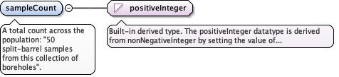
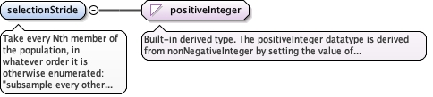

The area this sample design applies to. A feature fulfils thisscope if its reference point lies within this zone, the sametest diggs:SFDesignScopeType/zone applies.
<element name="zone" type="diggs:PlanarSurfaceOrMultiSurfacePropertyType"><annotation><documentation>The area this sample design applies to. A feature fulfils this scope if its reference point lies within this zone, the same test diggs:SFDesignScopeType/zone applies.</documentation></annotation></element>
One or more sampling-feature designs this sample design collectsfrom: a collection of boreholes, or a single reference for aspecific one. This is plan-to-plan: it cites adiggs:AbstractSamplingFeatureDesign or a specialization (forexample diggs:DesignBorehole or diggs:DesignInstallation), anantecedent within the plan graph, never a realized samplingfeature.
The gml:identifier value of the referenced feature, as a fully qualifiedvalue. It gives an alternative to the gml:id in xlink:href for findingthe referenced feature, mainly to reference a feature by a globallyunique identifier and where naming conflicts occur with gml:id whenaccessing data in external files.
<element maxOccurs="unbounded" name="sourceFeatureRef" type="diggs:FeatureReferenceType"><annotation><appinfo source="urn:x-gml:targetElement">diggs:AbstractSamplingFeatureDesign</appinfo><documentation>One or more sampling-feature designs this sample design collects from: a collection of boreholes, or a single reference for a specific one. This is plan-to-plan: it cites a diggs:AbstractSamplingFeatureDesign or a specialization (for example diggs:DesignBorehole or diggs:DesignInstallation), an antecedent within the plan graph, never a realized sampling feature.</documentation></annotation></element>
One or more sample designs this one is to be subsampled oraggregated from: "aggregate all bulk samples from these threetest pits" cites the sample designs of the source pits, not thepits. This is plan-to-plan: it cites a diggs:DesignSample, anantecedent within the plan graph, never a realized sample.Meaningful only where the activityType of the host design isaggregate or subsample; the schema cannot enforce thatcorrelation.
The gml:identifier value of the referenced feature, as a fully qualifiedvalue. It gives an alternative to the gml:id in xlink:href for findingthe referenced feature, mainly to reference a feature by a globallyunique identifier and where naming conflicts occur with gml:id whenaccessing data in external files.
<element maxOccurs="unbounded" name="sourceSampleRef" type="diggs:FractionalReferenceType"><annotation><appinfo source="urn:x-gml:targetElement">diggs:DesignSample</appinfo><documentation>One or more sample designs this one is to be subsampled or aggregated from: "aggregate all bulk samples from these three test pits" cites the sample designs of the source pits, not the pits. This is plan-to-plan: it cites a diggs:DesignSample, an antecedent within the plan graph, never a realized sample. Meaningful only where the activityType of the host design is aggregate or subsample; the schema cannot enforce that correlation.</documentation></annotation></element>
A total count across the population: "50 split-barrel samplesfrom this collection of boreholes".
Diagram

Type
positiveInteger
Properties
content
simple
Source
<element name="sampleCount" type="positiveInteger"><annotation><documentation>A total count across the population: "50 split-barrel samples from this collection of boreholes".</documentation></annotation></element>
<element name="samplingInterval" type="diggs:SamplingIntervalPropertyType"><annotation><documentation>A regular spacing along each referenced feature, optionally bounded: "every 5 ft", or "every 5 ft between 2 m and 20 m".</documentation></annotation></element>
<element name="samplingPosition" type="diggs:RelativeLocationPropertyType"><annotation><documentation>One or more specific planned positions, relative to each referenced feature: "samples at 5, 10, 25 and 30 ft".</documentation></annotation></element>
Take every Nth member of the population, in whatever order it isotherwise enumerated: "subsample every other split-barrelsample" is a stride of 2. Meaningful only for a sourceSampleRefor sourceFeatureRef population with an inherent order;meaningless for zone, which has none.
Diagram

Type
positiveInteger
Properties
content
simple
Source
<element name="selectionStride" type="positiveInteger"><annotation><documentation>Take every Nth member of the population, in whatever order it is otherwise enumerated: "subsample every other split-barrel sample" is a stride of 2. Meaningful only for a sourceSampleRef or sourceFeatureRef population with an inherent order; meaningless for zone, which has none.</documentation></annotation></element>
Database handle for the object. It is of XML type ID, so is constrained to beunique in the XML document within which it occurs. An external identifier for the object inthe form of a URI may be constructed using standard XML and XPointer methods. This is doneby concatenating the URI for the document, a fragment separator, and the value of the idattribute.
Source
<complexType name="SampleDesignScopeType"><complexContent><extension base="diggs:AbstractComponentObjectBaseType"><sequence><choice><element name="zone" type="diggs:PlanarSurfaceOrMultiSurfacePropertyType"><annotation><documentation>The area this sample design applies to. A feature fulfils this scope if its reference point lies within this zone, the same test diggs:SFDesignScopeType/zone applies.</documentation></annotation></element><element maxOccurs="unbounded" name="sourceFeatureRef" type="diggs:FeatureReferenceType"><annotation><appinfo source="urn:x-gml:targetElement">diggs:AbstractSamplingFeatureDesign</appinfo><documentation>One or more sampling-feature designs this sample design collects from: a collection of boreholes, or a single reference for a specific one. This is plan-to-plan: it cites a diggs:AbstractSamplingFeatureDesign or a specialization (for example diggs:DesignBorehole or diggs:DesignInstallation), an antecedent within the plan graph, never a realized sampling feature.</documentation></annotation></element><element maxOccurs="unbounded" name="sourceSampleRef" type="diggs:FractionalReferenceType"><annotation><appinfo source="urn:x-gml:targetElement">diggs:DesignSample</appinfo><documentation>One or more sample designs this one is to be subsampled or aggregated from: "aggregate all bulk samples from these three test pits" cites the sample designs of the source pits, not the pits. This is plan-to-plan: it cites a diggs:DesignSample, an antecedent within the plan graph, never a realized sample. Meaningful only where the activityType of the host design is aggregate or subsample; the schema cannot enforce that correlation.</documentation></annotation></element></choice><choice minOccurs="0"><element name="sampleCount" type="positiveInteger"><annotation><documentation>A total count across the population: "50 split-barrel samples from this collection of boreholes".</documentation></annotation></element><element name="samplingInterval" type="diggs:SamplingIntervalPropertyType"><annotation><documentation>A regular spacing along each referenced feature, optionally bounded: "every 5 ft", or "every 5 ft between 2 m and 20 m".</documentation></annotation></element><element name="samplingPosition" type="diggs:RelativeLocationPropertyType"><annotation><documentation>One or more specific planned positions, relative to each referenced feature: "samples at 5, 10, 25 and 30 ft".</documentation></annotation></element><element name="selectionStride" type="positiveInteger"><annotation><documentation>Take every Nth member of the population, in whatever order it is otherwise enumerated: "subsample every other split-barrel sample" is a stride of 2. Meaningful only for a sourceSampleRef or sourceFeatureRef population with an inherent order; meaningless for zone, which has none.</documentation></annotation></element></choice></sequence></extension></complexContent></complexType>